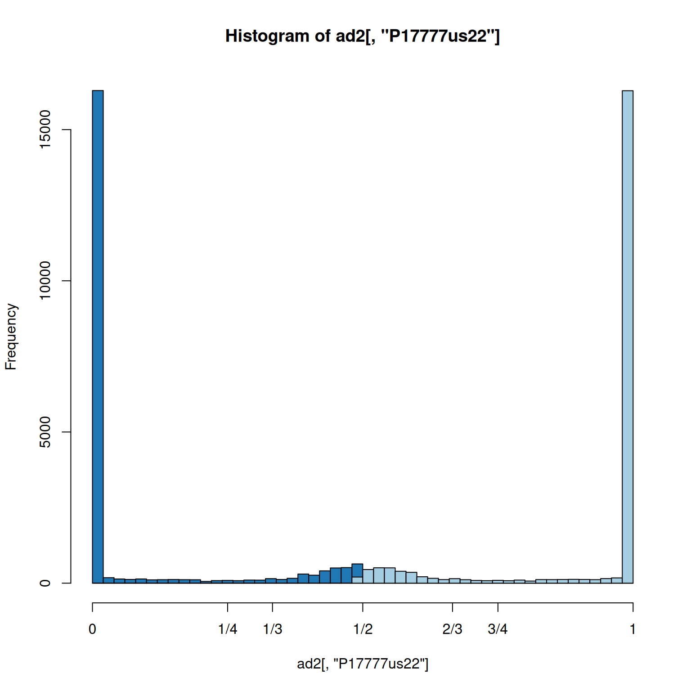
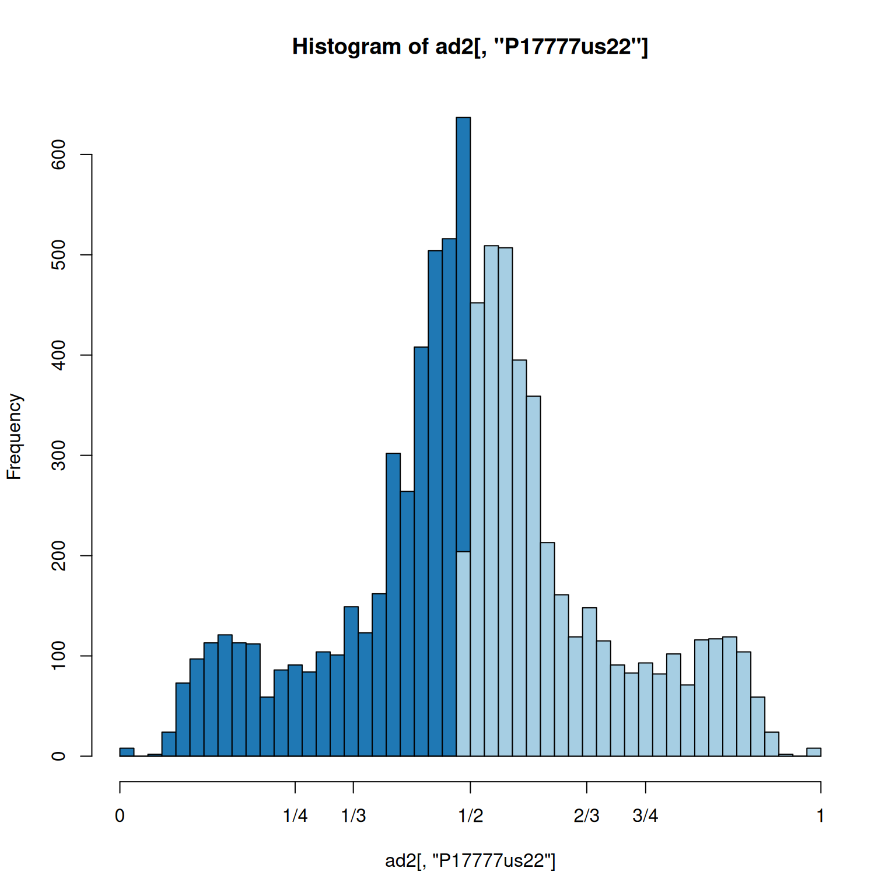
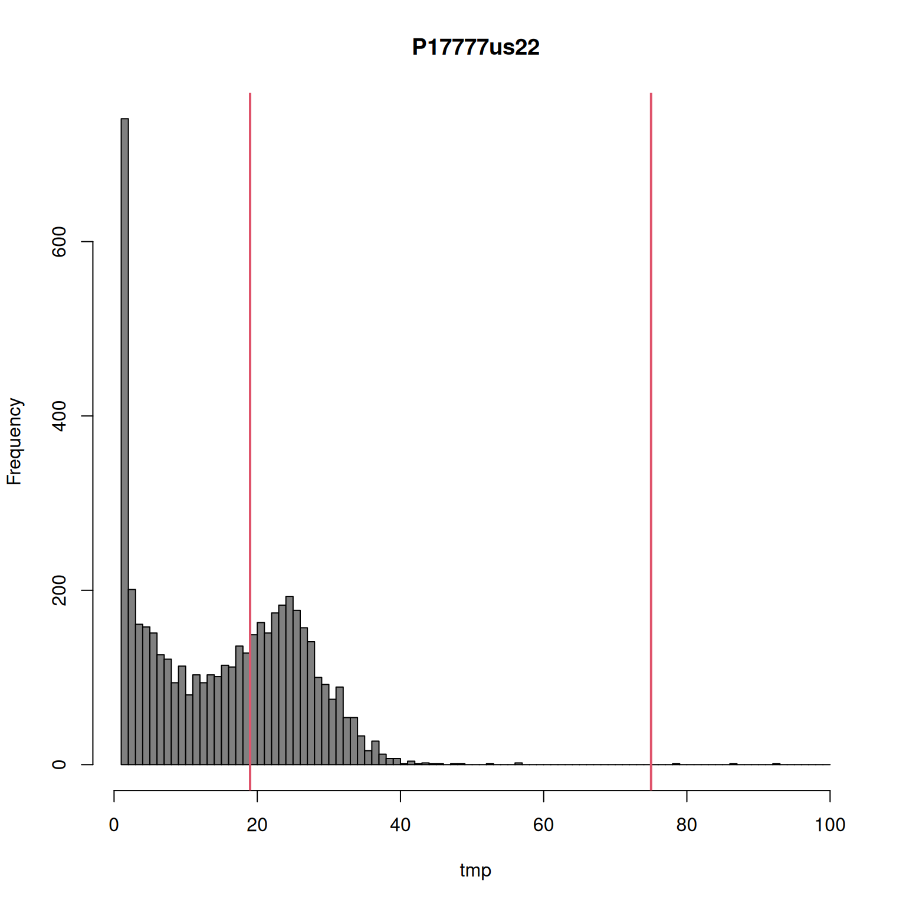
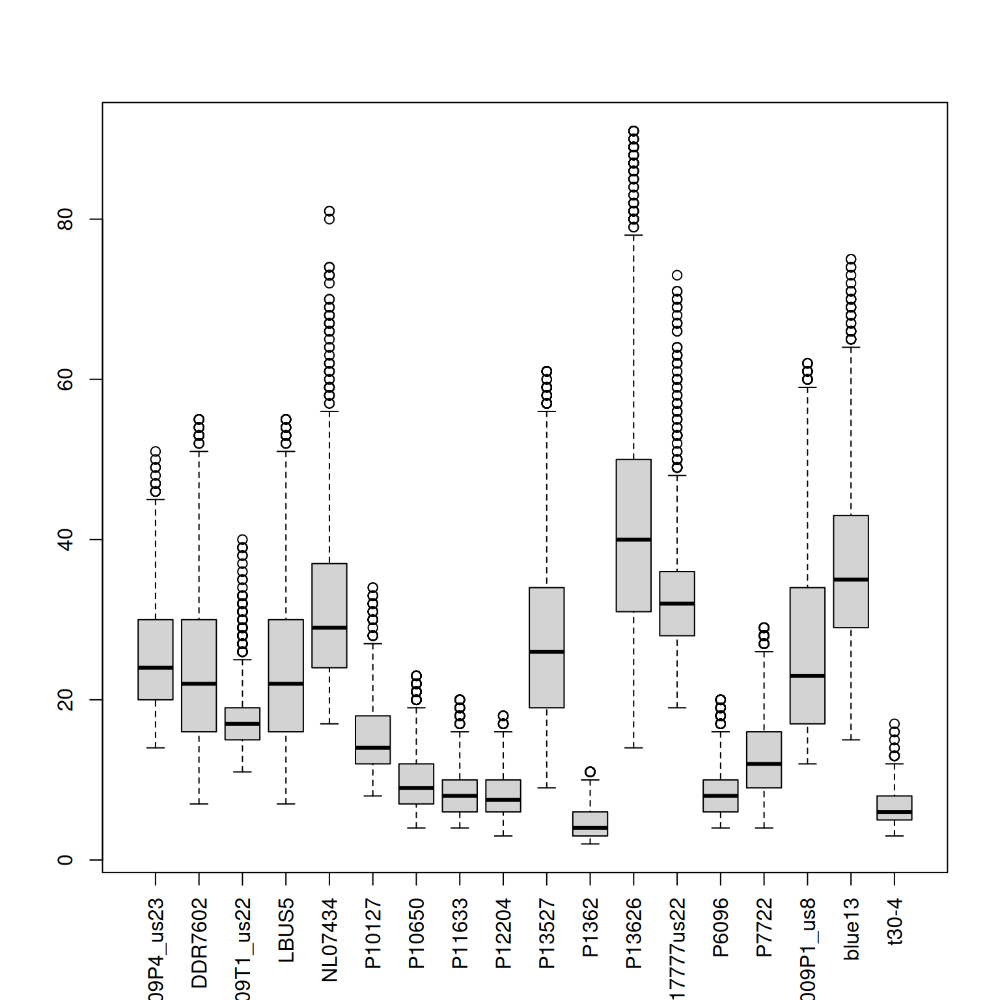
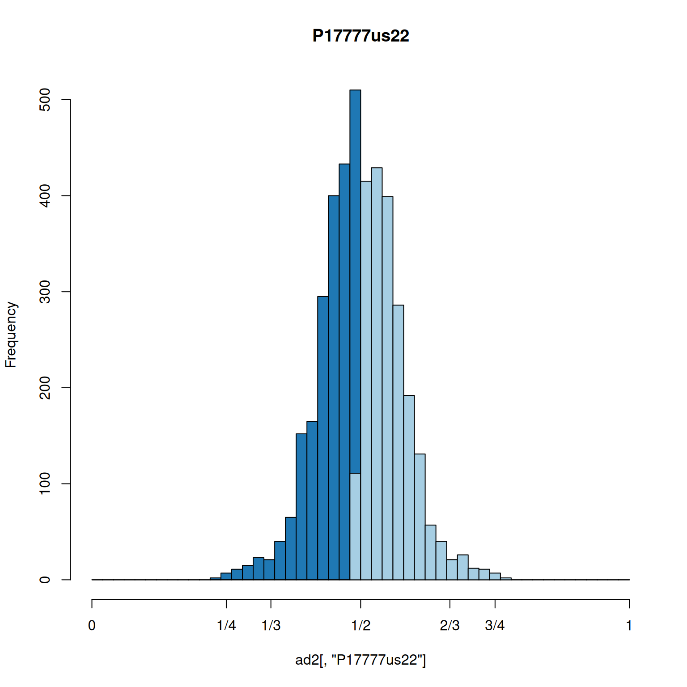
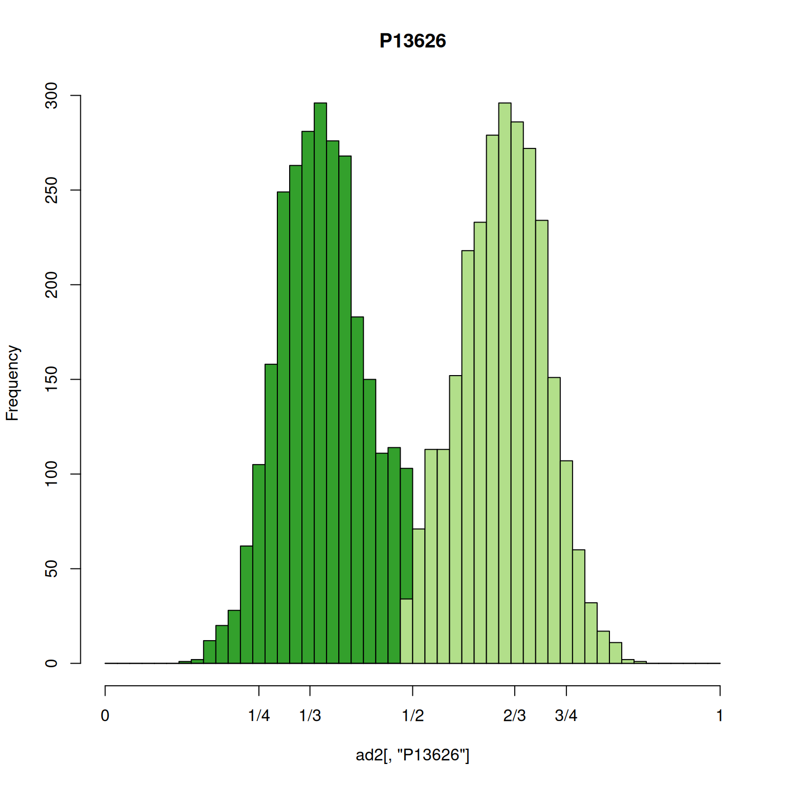

For some organisms ploidy information is unclear. This is important because current variant callers can need to have ploidy specified at the time of variant calling (i.e., they cannot infer ploidy). Here I explore a method to infer ploidy from VCF data.
Data import is performed similar to other examples.
# Load libraries
library(vcfR)
library(pinfsc50)
# Determine file locations
vcf_file <- system.file("extdata", "pinf_sc50.vcf.gz",
package = "pinfsc50")
# Read data into memory
vcf <- read.vcfR(vcf_file, verbose = FALSE)
vcf## ***** Object of Class vcfR *****
## 18 samples
## 1 CHROMs
## 22,031 variants
## Object size: 20.9 Mb
## 7.929 percent missing data
## ***** ***** *****In high throughput sequencing we sequence each allele multiple times. For heterozygotes it is assumed that we sequence each allele an equal number of times. For example, if we sequence a diploid heterozygote at 30X we would expect to sequence each allele 15 times. Some variation around this expectation may be due to sequencing error. If we sequence a triploid heterozygote with a genotype of A/A/T at 30X we would expect to sequence A 20 times and T 10 times. Because we can not determine which A was sequenced we can only report the sum of all sequences even though we expect to sequence both A alleles 10 times. For a triploid heterozygote with a genotype of A/C/T sequenced at 30X would expect to sequence A 10 times, C 10 times and T 10 times.
knitr::kable(vcf@gt[c(1:2,11,30),1:4])| FORMAT | BL2009P4_us23 | DDR7602 | IN2009T1_us22 |
|---|---|---|---|
| GT:AD:DP:GQ:PL | 1|1:0,7:7:21:283,21,0 | 1|1:0,6:6:18:243,18,0 | 1|1:0,8:8:24:324,24,0 |
| GT:AD:DP:GQ:PL | 0|0:12,0:12:36:0,36,427 | 0|0:20,0:20:60:0,60,819 | 0|0:16,0:16:48:0,48,650 |
| GT:AD:DP:GQ:PL | 0|1:17,12:29:99:453,0,667 | 0|0:32,0:32:96:0,96,1433 | 0|0:40,0:40:99:0,120,1765 |
| GT:AD:DP:GQ:PL | 1|0:7,4:11:99:130,0,260 | 0|0:16,0:16:48:0,48,677 | 0|0:26,0:26:78:0,78,1073 |
The ‘AD’ field in our VCF data includes the depth at which each allele was sequenced. We can extract this information with the function extract.gt().
ad <- extract.gt(vcf, element = 'AD')knitr::kable(ad[c(1:2,11,30),1:4])| BL2009P4_us23 | DDR7602 | IN2009T1_us22 | LBUS5 | |
|---|---|---|---|---|
| Supercontig_1.50_41 | 0,7 | 0,6 | 0,8 | 0,6 |
| Supercontig_1.50_136 | 12,0 | 20,0 | 16,0 | 20,0 |
| Supercontig_1.50_616 | 17,12 | 32,0 | 40,0 | 32,0 |
| Supercontig_1.50_1887 | 7,4 | 16,0 | 26,0 | 16,0 |
Note that these genotypes were called as diploids. This can be validated by confirming that the genotypes consist of two alleles. Allele depth appears to be independent of this parameterization. This is probably because this information can be gathered upstream of the process of genotype calling. Despite the specification of diploidy, the allele depth information can include the observation of multiple alleles.
#knitr::kable(ad[grep("[^0],[^0],[^0]", ad[,'DDR7602']),1:4])
knitr::kable(ad[grep("[^0],[^0],[^0]", ad[,'P13626'])[1:6],c(2:3,12)])| DDR7602 | IN2009T1_us22 | P13626 | |
|---|---|---|---|
| Supercontig_1.50_105867 | 0,0,23 | 12,9,0 | 8,7,13 |
| Supercontig_1.50_208264 | 7,2,0 | 14,1,0 | 6,2,4 |
| Supercontig_1.50_212192 | 2,1,0 | 18,2,0 | 9,1,6 |
| Supercontig_1.50_218971 | 1,0,4 | 14,3,7 | 11,2,9 |
| Supercontig_1.50_442450 | 2,3,0 | 0,7,0 | 1,5,1 |
| Supercontig_1.50_485181 | 29,2,1 | 42,0,0 | 29,4,3 |
This can be seen in the VCF data along with the genotypes as well.
#knitr::kable(vcf@gt[grep("[^0],[^0],[^0]", ad[,'P13626']),c(4:5,13)])
knitr::kable(vcf@gt[grep("[^0],[^0],[^0]", ad[,'P13626'])[1:6],c(3:4,13)])| DDR7602 | IN2009T1_us22 | P13626 |
|---|---|---|
| 2|2:0,0,23:23:72:1080,1080,1080,72,72,0 | 0|1:12,9,0:21:99:308,0,431,351,487,1139 | 0|2:8,7,13:28:32:644,377,691,0,32,412 |
| 0|1:7,2,0:9:99:105,0,285,126,221,330 | 0|0:14,1,0:15:0:0,0,585,42,506,529 | 2|0:6,2,4:12:66:126,66,330,0,124,187 |
| 0|1:2,1,0:3:36:36,0,70,42,38,74 | 1|0:18,2,0:20:30:30,0,750,84,574,615 | 2|0:9,1,6:16:99:149,149,570,0,266,286 |
| 2|0:1,0,4:5:13:90,109,209,0,31,13 | 0|2:14,3,7:24:86:98,86,493,0,254,344 | 0|2:11,2,9:22:99:174,186,563,0,210,244 |
| 1|0:2,3,0:5:99:111,0,113,120,122,241 | 1|1:0,7,0:7:21:297,21,0,297,21,297 | 0|1:1,5,1:7:19:147,0,27,127,19,165 |
| 0|0:29,2,1:32:45:0,45,965,45,963,1386 | 0|0:42,0,0:42:99:0,125,1438,131,1525,1875 | 0|1:29,4,3:36:20:20,0,874,114,916,1710 |
The genotypes are reported as diploid genotypes because this was specified as an argument for the variant caller. Despite this specification, we can see that more than two alleles can be observed for a sample at a variant. Here we’ve searched the sample P13626 for teh presented example.
The function extract.gt() isolates the ‘AD’ data from the colon delimited string in the VCF data. We expect integer counts for the number of sequences observed. However, because this data is comma delimited we need another step before we have integers. We use the function masplit() to extract the first and second allele. At that point we have integers so we can use math to create allele frequencies from the counts.
allele1 <- masplit(ad, record = 1)
allele2 <- masplit(ad, record = 2)
ad1 <- allele1 / (allele1 + allele2)
ad2 <- allele2 / (allele1 + allele2)Once we have our allele frequencies we can plot them with a histogram.
hist(ad2[,"P17777us22"], breaks = seq(0,1,by=0.02), col = "#1f78b4", xaxt="n")
hist(ad1[,"P17777us22"], breaks = seq(0,1,by=0.02), col = "#a6cee3", add = TRUE)
axis(side=1, at=c(0,0.25,0.333,0.5,0.666,0.75,1), labels=c(0,"1/4","1/3","1/2","1/3","3/4",1))
The most common class of variant is the homozygote. This overwhelms the plot. We can remove these so we can focus on the heterozygotes.
gt <- extract.gt(vcf, element = 'GT')
hets <- is_het(gt)
is.na( ad[ !hets ] ) <- TRUE
allele1 <- masplit(ad, record = 1)
allele2 <- masplit(ad, record = 2)
ad1 <- allele1 / (allele1 + allele2)
ad2 <- allele2 / (allele1 + allele2)
hist(ad2[,"P17777us22"], breaks = seq(0,1,by=0.02), col = "#1f78b4", xaxt="n")
hist(ad1[,"P17777us22"], breaks = seq(0,1,by=0.02), col = "#a6cee3", add = TRUE)
axis(side=1, at=c(0,0.25,0.333,0.5,0.666,0.75,1), labels=c(0,"1/4","1/3","1/2","1/3","3/4",1))
This allows us to focus on the heterozygous variants and we observe a peak at 0.5 consistent with our expectation. However, the frequencies range almost completely from 0 to one. This suggests some improvement could be made.
To get an idea on how to improve our plots we can take a closer look at allele depth.
ad <- extract.gt(vcf, element = 'AD')
#ad[1:3,1:4]
allele1 <- masplit(ad, record = 1)
allele2 <- masplit(ad, record = 2)
# Subset to a vector for manipulation.
tmp <- allele1[,"P17777us22"]
#sum(tmp == 0, na.rm = TRUE)
#tmp <- tmp[tmp > 0]
tmp <- tmp[tmp <= 100]
hist(tmp, breaks=seq(0,100,by=1), col="#808080", main = "P17777us22")
sums <- apply(allele1, MARGIN=2, quantile, probs=c(0.15, 0.95), na.rm=TRUE)
sums[,"P17777us22"]## 15% 95%
## 19 75abline(v=sums[,"P17777us22"], col=2, lwd=2)Here we have presented the number of times the most abundant allele was sequenced as a histogram. We see two classes of calls resulting in peaks at just below 40 and just below 60. These peaks correspond to heterozygotes and homozygotes respectively. There are a substantial number of variants with exceptionally high coverage, here we’ve limited the presentation to just variants below 100. There is also a substantial peak near zero representing variants sequenced at low coverage. Filtering this data by imposing some sort of threshold may improve our other analyses. Here we’ve used the 15% and 95% quantiles.
We can see how this treatment looks on the second most abundant allele as well.
tmp <- allele2[,"P17777us22"]
tmp <- tmp[tmp>0]
tmp <- tmp[tmp<=100]
hist(tmp, breaks=seq(1,100,by=1), col="#808080", main="P17777us22")
sums[,"P17777us22"]## 15% 95%
## 19 75abline(v=sums[,"P17777us22"], col=2, lwd=2)
We can use this information to filter our data. First we’ll look at the raw data.
#vcf <- extract.indels(vcf)
#gq <- extract.gt(vcf, element = 'GQ', as.numeric = TRUE)
#vcf@gt[,-1][ gq < 99 ] <- NA
ad <- extract.gt(vcf, element = 'AD')
allele1 <- masplit(ad, record = 1)
allele2 <- masplit(ad, record = 2)
boxplot(allele1, las=3)#hist(allele1[,"P17777us22"], ylim=c(0,2000),
# breaks = seq(0,max(allele1[,"P17777us22"], na.rm = TRUE),by=5),
# xlim=c(0,100))
# Subset to a vector for manipulation.
#tmp <- allele1[,"P17777us22"]
#tmp <- tmp[tmp <= 100]
#hist(tmp, breaks=seq(0,100,by=1), col="#808080")Now we can use our quantiles to censor variants outside of our desired range by setting them to NA.
sums <- apply(allele1, MARGIN=2, quantile, probs=c(0.15, 0.95), na.rm=TRUE)
# Allele 1
dp2 <- sweep(allele1, MARGIN=2, FUN = "-", sums[1,])
#allele1[dp2 < 0] <- NA
vcf@gt[,-1][ dp2 < 0 & !is.na(vcf@gt[,-1]) ] <- NA
dp2 <- sweep(allele1, MARGIN=2, FUN = "-", sums[2,])
#allele1[dp2 > 0] <- NA
vcf@gt[,-1][dp2 > 0] <- NA
# Allele 2
dp2 <- sweep(allele2, MARGIN=2, FUN = "-", sums[1,])
vcf@gt[,-1][ dp2 < 0 & !is.na(vcf@gt[,-1]) ] <- NA
dp2 <- sweep(allele2, MARGIN=2, FUN = "-", sums[2,])
vcf@gt[,-1][dp2 > 0] <- NA
# Hard filter
#dp[dp < 4] <- NA
#vcf@gt[,-1][allele1 < 8] <- NA
#
#adp <- adp[adp<=100]
#adp <- adp[adp>=sums[,"P17777us22"][1]]
#adp <- adp[adp<=sums[,"P17777us22"][2]]
#hist(adp, breaks=seq(0, max(adp, na.rm = TRUE )+1, by=1), col="#C0C0C0", xlim = c(0,100))
#axis(side=1,at=1:4*10)
#abline(v=sums[,"P17777us22"], col=2, lwd = 2)
#adp <- allele2[,"P17777us22"]
#adp <- adp[adp>0]
#adp <- adp[adp<=100]
#hist(adp, breaks=seq(0, max(adp, na.rm = TRUE), by=1), col="#C0C0C0")
#par(mfrow=c(1,1))
#abline(v=sums[,"P17777us22"], col=2, lwd = 2)Now we can check out work with another set of box and whisker plots.
ad <- extract.gt(vcf, element = 'AD')
allele1 <- masplit(ad, record = 1)
allele2 <- masplit(ad, record = 2)
boxplot(allele1, las=3)
#hist(allele1[,"P17777us22"], ylim=c(0,2000), breaks = seq(0,100,by=5) )Now we can see if our histogram of allele balance has been cleaned up.
gt <- extract.gt(vcf, element = 'GT')
hets <- is_het(gt)
is.na( ad[ !hets ] ) <- TRUE
allele1 <- masplit(ad, record = 1)
allele2 <- masplit(ad, record = 2)
ad1 <- allele1 / (allele1 + allele2)
ad2 <- allele2 / (allele1 + allele2)
hist(ad2[,"P17777us22"], breaks = seq(0,1,by=0.02), col = "#1f78b4", xaxt="n", main="P17777us22")
hist(ad1[,"P17777us22"], breaks = seq(0,1,by=0.02), col = "#a6cee3", add = TRUE)
axis(side=1, at=c(0,0.25,0.333,0.5,0.666,0.75,1), labels=c(0,"1/4","1/3","1/2","2/3","3/4",1))
We see that the shoulders that were present in the previous plot are almost entirely removed. This appears to be a dramatic improvement.
While we’ve focused on one sample through most of this example its important to realize that we’ve been analyzing all of the samples in the dataset. This means that now that we have one sample that appears to to have been well processed we can now examine the other samples as well.
hist(ad2[,"P13626"], breaks = seq(0,1,by=0.02), col = "#33a02c", xaxt="n", main="P13626")
hist(ad1[,"P13626"], breaks = seq(0,1,by=0.02), col = "#b2df8a", add = TRUE)
axis(side=1, at=c(0,0.25,0.333,0.5,0.666,0.75,1), labels=c(0,"1/4","1/3","1/2","2/3","3/4",1))
This is an example of a sample that appears triploid. The greatest density of the allele frequencies are at 1/3 and 2/3 as we would expect from a triploid. This demonstrates how these methods can be used to infer ploidy among diploids, triploids and possibly higher ploids.
Copyright © 2017 Brian J. Knaus. All rights reserved.
USDA Agricultural Research Service, Horticultural Crops Research Lab.